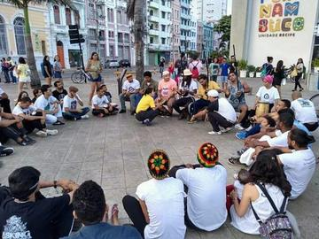
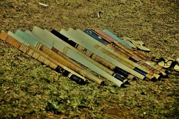

about 1500 to 1800
Age of Contact and Craft
Trade and empire carried pastimes across oceans while village traditions took their lasting shape.
- Pacific and Oceania (11)
- Celtic and Atlantic Europe (11)
- Northern and Eastern Europe (10)
- Southeast Asia and the Islands (6)
- Mediterranean (6)
- The Americas: Caribbean (5)
- South Asia (5)
- The Americas: Andes and South America (3)
- Shared across the world (3)
- The Americas: North America (3)
- Japan and Korea (3)
- Africa: Nile and the Horn (3)
- Africa: Southern Africa (3)
- Mesopotamia, Levant and Arabia (3)
- China (2)
- Africa: Sahel, West and Central (2)
- The Americas: Mesoamerica (1)
- Persia, Caucasus and Central Asia (1)
- Africa: Great Lakes and Indian Ocean (1)
Africa: Nile and the Horn 3


Nile Felucca Sailing
Egypt · Racing
Africa: Sahel, West and Central 2

Tifinagh Letter Puzzle
Niger +3 · Puzzles and mind gamesAchi
Ghana · Board and table games
Africa: Great Lakes and Indian Ocean 1

Ngalawa outrigger sailing
Comoros · Racing
Africa: Southern Africa 3

Basotho pony mountain race
Lesotho · Racing
Capoeira Angola
Angola · Street and playground games
Mokoro polling
Botswana · Racing
Mesopotamia, Levant and Arabia 3

Persia, Caucasus and Central Asia 1

South Asia 5


Shikara paddle race
India · RacingKhuru
Bhutan · Dexterity and skill games
China 2


Stone Arch Bridge Builder
China · Puzzles and mind games
Japan and Korea 3

Fukuwarai
Japan · Puzzles and mind games
Hanetsuki
Japan · Racing
Sangaku Geometry Puzzles
Japan · Puzzles and mind games
Southeast Asia and the Islands 6


Independence-day field games
Indonesia · Racing

Pacu jawi
Indonesia · Racing

Thung chai basket-boat spinning
Vietnam · Racing
Pacific and Oceania 11




Two-up
Australia · Board and table gamesFuu Fuu Penu
Tuvalu · Street and playground gamesVanuatu cricket
Vanuatu · Street and playground games
Mediterranean 6

Cantabrian palm bowling
Spain · Street and playground games
Venetian lagoon regatta
Italy · RacingMaghrebi 5x5 capture game
Libya · Board and table gamesTombola
Italy +1 · Racing
Northern and Eastern Europe 10

Danish pin billiards
Denmark · Street and playground games


Kyykka
Finland · Street and playground games
Letter Categories
Germany +3 · Racing
Oina
Romania · Bat-and-ball games
Partner-Carry Obstacle Race
Finland · Racing
Celtic and Atlantic Europe 11


Change Ringing
United Kingdom · Puzzles and mind games
Frisian Road Bowling
Ireland +2 · Dexterity and skill games

Regional pub games
United Kingdom · Street and playground games
Road bowling
Ireland · Street and playground games
The Americas: Mesoamerica 1

The Americas: Andes and South America 3

Bandoneon and tango rhythm
Argentina +1 · Musical instrumentsPlay preview · in the Drum Music of the World app
The Americas: Caribbean 5

Antigua Classic Yacht Race
Antigua and Barbuda +1 · Racing

Yard cricket
Trinidad and Tobago +5 · Street and playground gamesStreet baseball
Dominican Republic · Street and playground gamesTaco bat game
Cuba · Street and playground games
The Americas: North America 3

Five-Pin Bowling
Canada · Other traditions